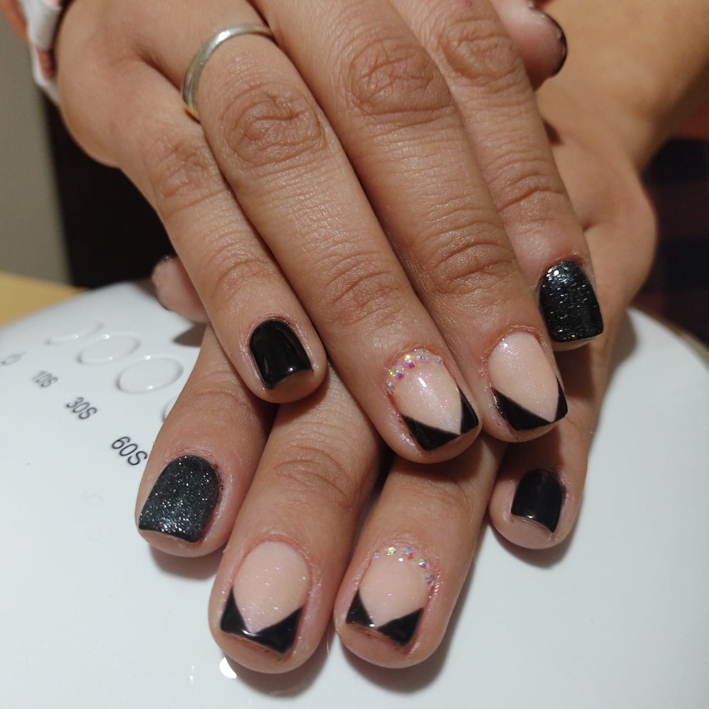

Semipermante

La manicura semipermanente es un esmaltado de secado inmediato y de larga duración que mantiene un
resultado reluciente. Este efecto se consigue con la aplicación de esmaltes específicos y el secado
de
las uñas en una luz UV o LED. Si quieres que tus uñas se vean perfectas durante 15 días, la manicura
semipermanente es la mejor opción.
Esculpidas
Las uñas esculpidas son extensiones que se construyen a partir de la uña natural con material
acrílico.
Estas
permiten restaurar y reconstruir uñas mordidas o simplemente, lucir uñas más largas. Algo que las
hace
sumamente atractivas, ya que se puede moldear la forma y longitud para obtener varios estilos.
Esmaltado Clasico
Duración del turno: 30 minutos.
Las uñas duran 1 semana aproximadamente.
Manicure BASIC incluye: limado, cutícula, esmaltado e hidratación con crema de almendras.
Kapping
El Kapping consiste en aplicar una fina capa de acrílico o gel fortificador sobre la uña que actuará
como una barrera protectora. A diferencia de las uñas esculpidas, este baño en gel kapping no alarga
la uña natural sino que acompaña el crecimiento de la misma y dura hasta 20 días.
Esculpidas
Las uñas esculpidas son extensiones que se construyen a partir de la uña natural con material
acrílico.
Estas
permiten restaurar y reconstruir uñas mordidas o simplemente, lucir uñas más largas. Algo que las
hace
sumamente atractivas, ya que se puede moldear la forma y longitud para obtener varios estilos.
Semipermante
La manicura semipermanente es un esmaltado de secado inmediato y de larga duración que mantiene un
resultado reluciente. Este efecto se consigue con la aplicación de esmaltes específicos y el secado
de
las uñas en una luz UV o LED. Si quieres que tus uñas se vean perfectas durante 15 días, la manicura
semipermanente es la mejor opción.